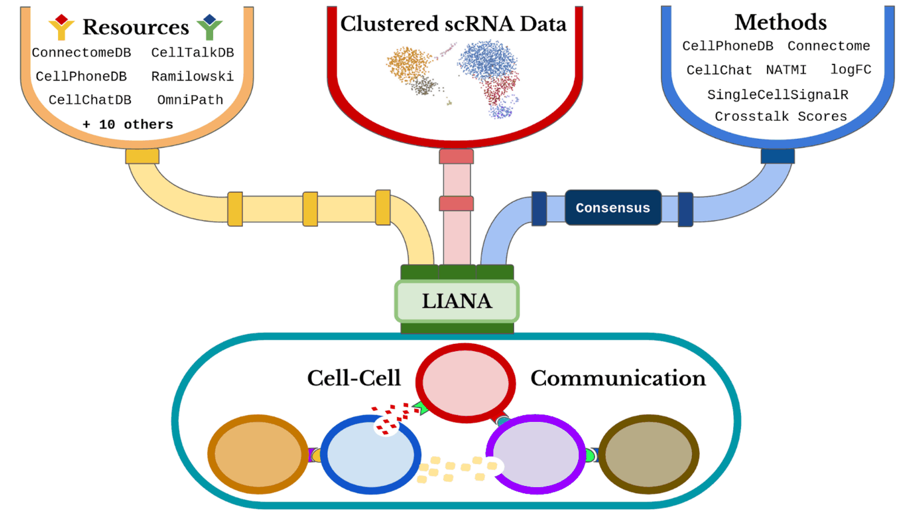

La comunicación célula-célula desempeña un papel crucial en la coordinación de las actividades celulares y en el mantenimiento de la funcionalidad general de los organismos multicelulares. Este proceso permite que las células transmitan señales, intercambien información y coordinen sus comportamientos, contribuyendo de manera esencial a procesos biológicos como el desarrollo, la respuesta inmunitaria y la homeostasis tisular. En este contexto, inferir interacciones célula-célula a partir de datos de expresión génica resulta valioso para desentrañar los múltiples roles y mecanismos de coordinación que las células llevan a cabo dentro de sistemas multicelulares. En este cuaderno se presentarán los conceptos principales y un flujo de trabajo computacional general, seguido de actividades prácticas utilizando LIANA, una herramienta flexible que implementa múltiples métodos de vanguardia para el estudio de las interacciones célula-célula.
# Descargar un script de shell para agregar los repositorios de CRAN a Ubuntu Jammy
download.file("https://github.com/eddelbuettel/r2u/raw/master/inst/scripts/add_cranapt_jammy.sh",
"add_cranapt_jammy.sh")
# Cambiar los permisos del archivo para hacerlo ejecutable
Sys.chmod("add_cranapt_jammy.sh", "0755")
# Ejecutar el script de shell
system("./add_cranapt_jammy.sh")
# Habilitar el gestor de paquetes binarios (bspm) para manejar paquetes del sistema y de CRAN
bspm::enable()
options(bspm.version.check=FALSE)
Crearemos una función en R que realice llamadas al sistema.
# Definir una función para ejecutar comandos de shell e imprimir la salida
shell_call <- function(command, ...) {
result <- system(command, intern = TRUE, ...)
cat(paste0(result, collapse = "\n"))
}
Instalar las librerías requeridas
# Instalar los paquetes de R requeridos
install.packages("R.utils")
# Instalar Seurat Wrappers desde GitHub (comentado)
# remotes::install_github('satijalab/seurat-wrappers@d28512f804d5fe05e6d68900ca9221020d52cf1d', upgrade=F)
# Instalar BiocManager si no está instalado
if (!require("BiocManager", quietly = TRUE))
install.packages("BiocManager", quiet = T)
# Instalar Harmony y LIANA desde GitHub
install.packages("harmony")
remotes::install_github('saezlab/liana', upgrade=F)
LIANA (Ligand-Receptor Inference Analysis) ofrece una variedad de métodos estadísticos para inferir interacciones ligando-receptor a partir de datos transcriptómicos de células individuales, utilizando conocimiento previo. Este cuaderno tiene como objetivo demostrar cómo usar LIANA de forma básica con nuestros datos de interés.
Pasos para usar LIANA:

# Instala el paquete **Seurat** para el análisis de células individuales.
install.packages("Seurat")
# Cargar las librerias necesarias para la manipulación y el análisis de datos
library(tidyverse) # Conjunto de paquetes para ciencia de datos
library(magrittr) # Operador pipe
library(liana) # Análisis de comunicación célula-célula
library(Seurat) # Análisis de datos de RNA-seq de célula única
En esta sección, mostraremos todos los métodos implementados por LIANA a partir de diversas herramientas. Cada método infiere interacciones relevantes ligando-receptor basándose en diferentes supuestos. Típicamente, cada método entrega dos puntajes para cada par ligando-receptor:
1.Puntaje de magnitud (fuerza): Este puntaje indica la intensidad o fuerza de la interacción.
2.Este puntaje refleja cuán específica es la interacción para un par determinado de identidades celulares.
# Mostrar los métodos disponibles en la sesión actual de R
show_methods()
Los diferentes recursos de interacciones ligando-receptor se pueden encontrar aquí. El consenso integra todos los demás recursos.
# Mostrar los recursos disponibles en la sesión actual de R
show_resources()
Aquí cargamos nuestros datos de interés para estudiar la comunicación célula-célula.
# Descargar el conjunto de datos de COVID-19 (archivo RDS) desde Dropbox
download.file("https://www.dropbox.com/scl/fi/1ysew52kr8o2riahzubcw/BALF-COVID19-Liao_et_al-NatMed-2020.rds?rlkey=tg3tpn8la6oth25wvx3a22qt9&dl=1", "COVID.rds")
# Leer el archivo RDS en una variable llamada 'testdata'
testdata <- readRDS('COVID.rds')
# Mostrar una visión general de la estructura de 'testdata'
testdata %>% dplyr::glimpse()
# Esta condición específica 'group == "S"' se está utilizando para filtrar las filas. Solo se incluirán en el subconjunto aquellas filas donde el valor de la columna grupo sea igual a "S"
testdata <- subset(x = testdata, subset = group == "S")
# # Esta función se usa para obtener o establecer los identificadores de un objeto. La nueva columna se llama "celltype".
Idents(testdata) <- "celltype"
# Normalizar los datos de RNA-seq de una sola célula usando Seurat
testdata <- Seurat::NormalizeData(testdata, verbose = FALSE)
# Mostrar la estructura del conjunto de datos procesado
testdata %>% dplyr::glimpse()
Para ejecutar LIANA, puedes elegir cualquiera de los métodos que soporta. En este ejemplo, usaremos la implementación de CellPhoneDB.
La funciónliana_wrap invoca múltiples métodos, cada uno operando con el/los recurso(s) proporcionado(s). Si no se especifica un ejecutará todos los métodos implementados en LIANA. Además, el recurso consensus se usa por defecto.
cpdb_result <- liana_wrap(testdata, # Esta función del paquete LIANA se usa para realizar análisis de interacciones célula-célula utilizando diferentes métodos
method = 'cellphonedb',
resource = c('CellPhoneDB'), # Especifica que se usará el método CellPhoneDB
permutation.params = list(nperms=100, # Define los parámetros de permutación. nperms=100: Número de permutaciones
parallelize=FALSE, # Indica si la ejecución debe ser paralelizada
workers=4), # Número de trabajadores a usar si la ejecución fuera paralelizada
expr_prop=0.05) # Proporción mínima de expresión para considerar una interacción como válida
# Mostrar la estructura de los resultados de interacciones de CellPhoneDB
dplyr::glimpse(cpdb_result)
Para ejecutar LIANA utilizando múltiples métodos simultáneamente, puedes especificar los métodos deseados en el parámetro method. En este ejemplo, usaremos CellPhoneDB, NATMI, SingleCellSignalR (sca) y el enfoque logFC.
# Ejecutar un análisis de interacción más complejo utilizando múltiples métodos
complex_test <- liana_wrap(testdata,
method = c('cellphonedb', 'natmi', 'sca', 'logfc'),
resource = c('CellPhoneDB')) # Usar el recurso CellPhoneDB
# Mostrar la estructura de los resultados de la interacción compleja
dplyr::glimpse(complex_test)
Una de las características principales de LIANA es que puede calcular un ranking de consenso basado en las predicciones de todos los métodos empleados para analizar la comunicación célula-célula. Usando la función liana_aggregate() podemos integrar todos los resultados de cada método utilizado en el paso anterior.
# Agregar resultados de interacciones a través de múltiples métodos
liana_consensus <- complex_test %>% liana_aggregate()
# Mostrar la estructura de los resultados agregados de interacciones
dplyr::glimpse(liana_consensus)
Se pueden generar gráficos de puntos (dotplots) para interpretar fácilmente los pares importantes de ligando-receptor utilizados por los pares de células emisoras y receptoras.
Aquí, preprocesamos los resultados de CellPhoneDB y luego los graficamos. Se aplica un filtro para usar solo los casos significativos (valor P < 0,05).
cpdb_int <- cpdb_result %>%
# Solo conservar interacciones con valor p <= 0.05
filter(pvalue <= 0.05) %>% # Esto refleja la 'especificidad' de las interacciones
rank_method(method_name = "cellphonedb", mode = "magnitude") %>% # Luego ordenar según la 'magnitud' (lr_mean en este caso)
distinct_at(c("ligand.complex", "receptor.complex")) %>% # Conservar las 20 principales interacciones (sin importar el tipo celular)
head(20)
# Opciones(repr.plot.height = 12, repr.plot.width = 9)
# Graficar interacciones célula-célula usando la función de diagrama de puntos de LIANA
scPlot <- cpdb_result %>%
inner_join(cpdb_int, # Conservar solo las interacciones de interés
by = c("ligand.complex", "receptor.complex")) %>% # Invertir tamaño (valor p bajo / alta especificidad = punto más grande), se suma un valor pequeño para evitar Inf en ceros
mutate(pvalue = -log10(pvalue + 1e-10)) %>% # Transforma el valor p tomando el logaritmo negativo en base 10
liana_dotplot(source_groups = c("Epithelial"), # CCrea un gráfico de puntos para los grupos fuente y objetivo especificados, e indica el grupo fuente
target_groups = c("Macrophages", "NK", "B", "T", "Neutrophil"), # Especifica los grupos objetivo
specificity = "pvalue", # Usa el valor p para especificar el tamaño de los puntos
magnitude = "lr.mean", # Usa la media del log ratio para el color del punto
show_complex = TRUE,
size.label = "-log10(p-value)") + theme(axis.text.x = element_text(angle = 90))
scPlot
# Guardar el gráfico como un archivo de imagen
ggsave("01-liana_dotplot.png", plot = scPlot, bg = "white", dpi = 600, width = 16, height = 9)
De manera similar, podemos explorar los resultados del consenso.
# Opciones (repr.plot.height = 12, repr.plot.width = 9)
# Graficar las 20 principales interacciones a partir de los resultados agregados de LIANA
scPlot <- liana_consensus %>%
liana_dotplot(source_groups = c("Macrophages"),
target_groups = c("Macrophages", "NK", "B", "T", "Neutrophil"),
ntop = 20) + theme(axis.text.x = element_text(angle = 90))
scPlot
# Guardar la gráfica
ggsave("02-liana_dotplot.png", plot = scPlot, bg = "white", dpi = 600, width = 16, height = 9)
El potencial general de las células para comunicarse puede calcularse. Aquí, podemos contar el número de interacciones significativas/importantes. Luego, estas pueden visualizarse mediante un mapa de calor.
De manera similar, podemos comparar los resultados obtenidos con CellPhoneDB versus los del consenso.
# Filtrar interacciones con valor p ≤ 0.05 y graficar el mapa de calor de frecuencias
liana_trunc <- cpdb_result %>% filter(pvalue <= 0.05)
# Generar y guardar el mapa de calor
# png("03-heat_freq.png", bg = "white")
heat_freq(liana_trunc)
# dev.off()
# Filtrar las interacciones del consenso con un ranking agregado ≤ 0.01 y graficar el mapa de calor
liana_trunc <- liana_consensus %>% filter(aggregate_rank <= 0.01)
# Generar y guardar el mapa de calor
# png("04-heat_freq.png", bg = "white")
heat_freq(liana_trunc)
# dev.off()